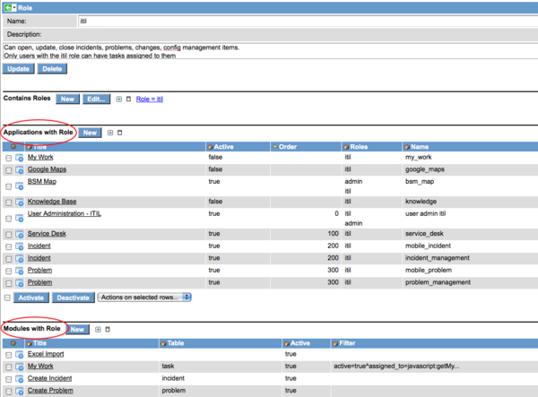

Fall 2009 Stable 2 Notable Changes
Contents
- 1 Report views are tracked
- 2 "Go to line" decoration for script fields
- 3 Consolidated Collapse All/Expand All icons for multi-section forms
- 4 Option to dynamically resize Import Set table columns as necessary
- 5 Controlled Domain cache flushes
- 6 Workflow "Task" activity renamed to "Create Task"
- 7 Transaction logging threshold implemented
- 8 Maximum run time for a Discovery
- 9 Duplicate Knowledge icon removed
- 10 Catalog and Knowledge search results limit
- 11 olap_cubulator moved to a UI Page
- 12 Task Survey plugin enhancement
- 13 CPU and Memory measurement improved in Discovery
- 14 Email Client enhancement to prefer SMS
- 15 Calendar report "Highlight Based On" enhancement
- 16 Ability to case-sensitive coalesce an import set
- 17 Display Role Relationships to Applications and Modules
- 18 00:00:00 in a glide_time field is stored as null
1 Report views are tracked
Report viewings are now tracked. The report_view event is thrown when a report is viewed, and a script action adds a row to the new report_view table that indicates who viewed what and when. A distinction is made between a direct report view through the Reports portal and a view from a homepage.
2 "Go to line" decoration for script fields
A "Go to line" decoration has been added to the header of script fields. When clicked, it prompts the user for the line to go to. This capability is not currently supported if the JavaScript Editor plugin is used.
3 Consolidated Collapse All/Expand All icons for multi-section forms
For a multi-section form, the Expand All and Collapse All icons have been consolidated into a single icon. Click once to collapse all, click again to expand all.
4 Option to dynamically resize Import Set table columns as necessary
An option has been added to dynamically resize columns in an Import Set table. To enable this option for a Data Source, add the following attribute to the Properties field: dynamic_field_resize=true
Note that this may dramatically increase database activity during the import, potentially impacting performance, if columns are resized for very large tables.
5 Controlled Domain cache flushes
When an import or script results in multiple individual Domain cache flushes, the cache flushes are deferred until the end of the operation to protect performance.
6 Workflow "Task" activity renamed to "Create Task"
In Graphical Workflow, the "Task" activity has been renamed to "Create Task".
7 Transaction logging threshold implemented
A limit was implemented on the number of log statements any one transaction can issue to reduce the impact a single transaction can have on an instance or server's storage. The glide.transaction.max_logs property controls this threshold, and the default value is 50000 log statements.
8 Maximum run time for a Discovery
A feature was added to Discovery to specify a "max run time" for any schedule. If a scheduled discovery has a max run time, and if the discovery takes longer than the max run time, the remainder of the discovery is cancelled.
9 Duplicate Knowledge icon removed
If a field has the knowledge_custom attribute, only the Custom Knowledge Search icon will be rendered for the field. Previously both that icon and the normal Knowledge Search icon were rendered, leading to confusion related to duplicate icons.
10 Catalog and Knowledge search results limit
A limit has been put on Catalog and Knowledge search results using the "glide.ui.text_search.rowcount" property, also used by the Global Text Search capability. Default value is 10.
11 olap_cubulator moved to a UI Page
The olap_cubulator page was converted to a UI Page. This means that it can be secured with a "read" ACL if desired.
12 Task Survey plugin enhancement
Add ability to specify days to wait before sending another survey on the condition record itself with the new control_internal field. The global property value will still be used if control_interval is not specified for a condition.
13 CPU and Memory measurement improved in Discovery
The CPU and Memory values for computer CIs can be rounded to a measurement determined in the Discovery properties. For example, a 5 MHz of rounding in CPU measurement would result in 3.205 GHz when the data gathered by the probe(s) was 3.204 GHz.
14 Email Client enhancement to prefer SMS
An option was added to allow the email client to preferentially send to users' SMS device if they have one. This option is turned on with the "glide.email_client.show_sms_option" property.
15 Calendar report "Highlight Based On" enhancement
A calendar report will now show "Highlight Based On" fields for extended tables. Previously only task-level fields with styles could be highlighted.
16 Ability to case-sensitive coalesce an import set
The ability was added to use a case-sensitive coalesce when running an import set.
17 Display Role Relationships to Applications and Modules
Two new related lists are available on the role form to display which applications and modules have that role defined.

{kind=link}
18 00:00:00 in a glide_time field is stored as null
If a glide_time field is saved with a value of 00:00:00 or (empty), a null value is stored. When displayed, a null time is displayed as 00:00:00 (midnight). Previously, a null value was displayed empty in the UI.